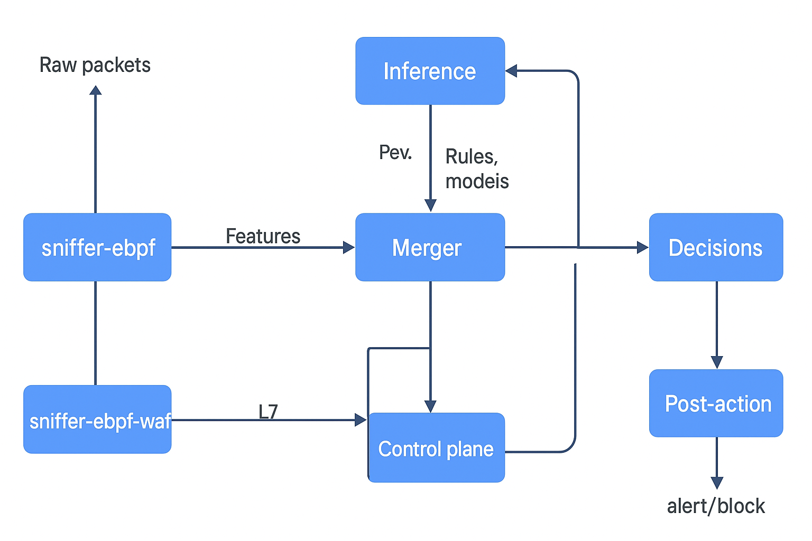

Vamos a especular un poco. Qué conllevaría integrar mi pipeline con un WAF decente?
🧬 1. Propósito de la integración
Tu pipeline hoy cubre niveles L2–L4 (red/transporte) y parte del L7 (detección ML de eventos, protocolos, comportamiento, ataques genéricos). Un WAF vive exclusivamente en L7 (aplicación web) y protege de:
- Inyecciones (SQLi, NoSQLi, LDAPi)
- XSS, CSRF, RFI, LFI
- Path traversal
- Deserializaciones inseguras
- Payloads anómalos (con ML o firmas)
- Bypass por codificación (Unicode, doble encoding, chunked transfer, etc.)
Integrarlo significaría extender tu sistema inmune digital desde la capa de red hasta la capa de aplicación. Esto convierte tu arquitectura en un IDS/IPS híbrido + WAF adaptativo.
⚙️ 2. Qué implicaría técnicamente
🔹 a) Inserción en el pipeline
Tu arquitectura actual (captura → feature extraction → clasificación ML → decisión → acción) podría ampliarse con un "módulo WAF bridge":
[Promiscuous Agent]
↓
[GeoIP + Feature Extractor]
↓
[Inference Layer ML]
↓
[WAF Bridge Layer]
↓
[Firewall / Honeypot / Ejector Layer]
Este bridge tendría funciones clave:
- Interceptar y analizar tráfico HTTP(S)
- Extraer features semánticas (parámetros, headers, URI, body)
- Correlacionar con los eventos de red previos (del IDS)
- Reenviar alertas al core ML para reentrenar modelos con contexto L7
🔹 b) Integración operativa
Opciones según el grado de integración:
| Modo | Descripción | Nivel de intervención |
|---|---|---|
| Pasivo (Mirror) | El WAF sólo exporta logs (por ejemplo, ModSecurity JSON audit logs) al pipeline para correlación y detección contextual. | Bajo riesgo |
| Activo (Inline) | Tu pipeline puede “ordenar” al WAF bloquear o liberar peticiones dinámicamente (API REST o socket). | Control adaptativo |
| Híbrido/Feedback | El IDS alimenta al WAF con inteligencia predictiva (patrones sospechosos, IPs, hashes), y el WAF devuelve evidencias detalladas. | Inteligencia colectiva |
🧩 3. Interoperabilidad con un WAF existente
Podrías integrarte con:
- ModSecurity / OWASP CRS → clásico, muy configurable, logs detallados.
- NAXSI (Nginx) → ligero, ideal para alto rendimiento.
- Cloudflare / Fastly / F5 → APIs ricas, permiten feedback ML.
- Custom Python WAF microservice → total control, integración nativa con tu pipeline.
Para tu caso (pipeline distribuido + ZeroMQ + ML adaptable), ModSecurity con CRS 4.x y output en JSON vía auditlog sería el mejor punto de partida. Podrías leer esos logs en tiempo real y alimentar eventos al bus ZeroMQ como “nivel aplicación”.
🧠 4. Beneficios de la integración
-
Visión unificada L2–L7 → Correlas comportamiento de red y de aplicación. Ejemplo: una IP realiza un scan y, minutos después, intenta SQLi → riesgo = máximo.
-
Aprendizaje contextual → El modelo aprende qué tipo de payloads acompañan ciertos patrones de tráfico.
-
Bloqueo adaptativo → El IDS puede “convencer” al WAF de activar reglas temporales sobre patrones emergentes.
-
Evidencia enriquecida → Los logs del WAF contienen headers, cookies, cuerpos parcialmente decodificados, todo útil para forense ML.
🧨 5. Riesgos y precauciones
- Latencia y throughput: un WAF inline añade milisegundos; deberías usar colas y batchs inteligentes.
- TLS termination: si analizas HTTPS, necesitas o certificados o mirror de tráfico antes del cifrado.
- Falsos positivos: combinar detección heurística + ML requiere mecanismos de rollback (listas blancas temporales).
- Gestión de estado y sincronización: correlacionar sesiones TCP con peticiones HTTP requiere un mapeo temporal eficiente.
🔐 6. Evolución natural: “Adaptive WAF Intelligence Layer”
Tu pipeline podría generar reglas dinámicas CRS o ModSecurity basadas en eventos ML:
if score_attack > 0.95 and type == "SQLi":
wafctl add-rule "SecRule REQUEST_URI|ARGS 'pattern_here' 'id:900001,phase:2,deny,msg:DynamicRuleFromAI'"
Y rotarlas cada hora. Esto te da una malla inmunitaria autoactualizable, donde el WAF ejecuta las “órdenes locales” derivadas del razonamiento global del IDS.
🧭 7. Camino recomendado para ti
- Empieza con ModSecurity en modo pasivo, enviando logs JSON al bus ZMQ.
- Añade un módulo correlador L4-L7 en tu pipeline.
- Crea un modelo ML de contexto HTTP, entrenado con los logs del WAF.
- Activa modo híbrido → bloqueo adaptativo con retroalimentación.
A ver, que aún no lo veo, no se en que parte del pipeline está. Por un lado, veo que tiene que capturar peticiones, datagramas, algo que ya hace el sniffer-ebpf. Podría configurar uno exclusivo para tráfico web, no? luego, necesita también un clasificador ml, podría ser uno exclusivo especializado en los ataques que suele sufrir un WAF, aunque, el clasificador ml que estamos construyendo, aunque por ahora esta siendo especializado en DDOS/Ransomware, tráfico web normal/anormal, tráfico interno normal/anormal, seguramente seguiremos añadiendo más modelos especializados en otro tipo de ataques, si Dios quiere. Es su evolución natural, por lo que, el WAF, perfectamente podría usar el clasificador ml. Entonces, el WAF, que necesitaría hacer especificamente? la latencia tambien es importante, no? y el enfoque distribuido también podría irle bien, no?
Buenísimo — vamos a aterrizarlo y ponerlo en el pipeline con detalles prácticos. Te doy dónde va el WAF, qué hace exactamente, cómo encaja con tus sniffers/ML y cómo minimizar latencia en un despliegue distribuido. Al final te dejo un flujo concreto + snippets (pseudocódigo / reglas) que puedes usar como plantilla.
¿DÓNDE va el WAF en tu pipeline?
Piensa en el WAF como una capa L7 que puede vivir en tres posiciones según objetivo y riesgo:
- Edge / Near client (CDN / LB / reverse proxy) — inspección temprana, bloqueos rápidos, reduce carga upstream.
- Origin / Pre-app (junto a la app, antes de llegar al backend) — inspección profunda, logs completos, contextos de sesión.
- Paralelo / Pasivo (mirror / tapping) — solo observación y enriquecimiento para ML, sin impacto en latencia.
Para tu arquitectura (ya distribuida, ZMQ, sniffer-ebpf, agentes), lo ideal es combinar:
- Instancias WAF ligeras en cada nodo de entrada (Nginx/Envoy+WAF o ModSecurity en modo embedded) en modo activo donde la latencia importa.
- Modo pasivo centralizado para inspección profunda y reentrenamiento (espejos de tráfico o logs JSON).
- Un WAF-bridge (microservicio) que conecta WAFs locales con el bus ZMQ y con tu motor de decisión ML.
¿Qué necesita hacer exactamente el WAF?
Funciones concretas y necesarias para integrar con tu pipeline IDS:
- Parsing & Normalización HTTP(S): URI, headers, cookies, chunked body, multi-part, encodings, parámetros JSON/XML form.
- Decodificación segura (double-encoding, unicode tricks).
- Signature / Rule Engine: aplicar CRS/firmas y reglas dinámicas.
- Anomaly Detection (ML): recibir scoring desde tu modelo ML (per-request or per-session) y combinarlo con firmas.
- Rate limiting & connection throttling (mitigación de DDoS a nivel de app).
- Bot / Credential stuffing detection (fingerprinting, velocity).
- Virtual patching (bloquear vulnerabilidades conocidas sin tocar app).
- Audit & Forensic Logs (JSON estructurado exportable).
- Action API: aceptar órdenes (block, challenge, monitor) desde el Decision Engine.
- TLS handling: offload o mirroring para tráfico HTTPS.
- Session correlation: mapear IP/flow <-> HTTP session, sincronizar con eventos L2–L4 del IDS.
Integración con tus sniffers y modelos ML
Tienes dos caminos compatibles:
-
Usar el mismo pipeline ML (modelo global) pero con sub-modelos especializados:
- Un modelo global para DDoS/Ransomware/Anomalía general.
- Modelos especializados L7 para SQLi/XSS/LFI, bot detection, etc.
- Los WAFs piden score al Inference API (sincronizado con tus modelos), o reciben reglas derivadas del ML.
-
Modelos embebidos en el WAF (edge):
- Modelos ligeros (Tiny RF / LightGBM exportado a C) para scoring local y decisiones rápidas.
- Modelos complejos en inference cluster (más latencia) para validación o reentrenamiento.
Recomendación: híbrido — quick-score local + validate/learn central. Eso te da baja latencia y retroalimentación para mejorar modelos pesados.
Latencia: consideraciones prácticas
La latencia es crítica para L7. Técnicas para mantenerla baja:
- Fast path vs slow path: reglas heurísticas rápidas (IP blacklists, rate limits) en el fast path; análisis profundo (deep signature + ML) en slow path solo si triggerea.
- Modelos ligeros on-node para decisiones en <1 ms; modelos pesados en asíncrono para confirmación.
- Batching & async logging: no bloquees la petición por escritura de logs a largo plazo — hazlo asíncrono.
- TLS offload / hardware accel o usar un proxy que haga terminación TLS (Nginx/Envoy) y pase texto plano al WAF.
- No blocking I/O en la cadena crítica — usa worker pools y circuit-breakers.
- Ejecución en kernel/eBPF para prefiltrado (por ejemplo, descartar grandes scans o filtrar tráfico obvio) antes de llegar al WAF userland.
Enfoque distribuido: por qué y cómo
Beneficios: baja latencia local, distribución de carga, resilience, y fuente de datos locales para modelos. Riesgos: consistencia de reglas y sincronización.
Diseño recomendado:
-
WAF Agent local (en cada borde):
- Regla local mínima + ML ligero.
- Exporta eventos a ZMQ (
waf.events). - Acepta comandos (
waf.commands) para bloquear/rotar reglas. -
Control Plane central (tu cluster de políticas):
-
Genera reglas dinámicas (basadas en ML), las firma y distribuye via etcd/consul.
- Mantiene versión/TTL de reglas (rotación automática).
- Consolida logs y alimenta el retrain pipeline.
-
Decision Engine (ML orchestration):
-
Consume eventos L2–L7, produce acciones recomendadas con razones (explainability).
- Emite reglas con ids y expiración.
Sincronización: usa etcd o similar (ya lo tenías en contexto) + ZeroMQ para eventos en tiempo real. Cada regla distribuida lleva TTL y versión.
Flujo concreto (end-to-end)
sniffer-ebpfcapta tráfico y envía metadatos L2–L4 al bus ZMQ (sniffer.flows).-
WAF local (reverse-proxy) recibe petición HTTP(S).
- Fast-path checks (IP, rate-limit).
- Normaliza payload y extrae features L7.
-
WAF llama al Inference API local o calcula score con modelo ligero:
-
POST /infer {features}→{score:0.03,tag:"normal"} -
Decision Engine recibe score + metadata L2–L4 (correlación) y decide acción:
-
Si
score > 0.95→block(WAF aplicadeny). - Si
0.6 < score <= 0.95→challenge(captcha) omonitor. - WAF aplica la acción y emite log JSON al collector + al bus ZMQ (
waf.audit). - Logs/pcaps relevantes van al retraining dataset y al módulo forense.
Ejemplo de mensajes ZMQ (simplificado)
evento desde WAF
{
"topic": "waf.audit",
"ts": "2025-10-14T09:43:00Z",
"src_ip": "1.2.3.4",
"uri": "/login",
"method": "POST",
"score_ml": 0.97,
"action": "blocked",
"rule_id": 900001,
"flow_id": "flow-xxxx"
}
Snippet de “regla dinámica” (pseudocmd)
# Decision Engine decide bloquear patrón y lo publica al Control Plane
curl -X POST https://controlplane.local/rules \
-d '{"id":900001, "expr":"ARGS|REQUEST_URI contains \"UNSAFE_PATTERN\"", "action":"deny", "ttl":3600}'
# Control plane escribe en etcd y publica evento zmq para que WAFs se actualicen
Tecnologías “buenas” para tu stack (orientativo)
- ModSecurity (flexible, CRS) — buen punto de partida para logs JSON y reglas custom.
- Nginx/OpenResty o Envoy + filtros para baja latencia.
- eBPF/sniffer para prefiltrado y correlación L2-L7.
- etcd para reglas distribuidas/TTL (ya en tu radar).
- ZeroMQ para eventos en tiempo real entre agentes (encaja con tu arquitectura).
- Modelos: Random Forest ligero exportado, o ONNX para portabilidad a C/C++.
Riesgos operativos y contramedidas
- Falsos positivos → implementar safelists, challenge flows y rollback automático, además de métricas A/B para medir impacto.
- TLS legal/privacidad → gestionar certificados y políticas de inspección (mirroring vs termination).
- Complejidad → empezar con WAF pasivo + ML offline; luego evolucionar a híbrido.
Plantilla mínima para arrancar (playbook)
- Despliegue ModSecurity en modo pasivo junto al reverse-proxy.
- Haz que ModSecurity emita audit logs JSON a tu collector (ZMQ consumer).
- Implementa un Inference API simple que reciba features HTTP y devuelva score (modelo RF pequeño).
-
Crea un WAF bridge que:
- Reciba logs ModSecurity.
- Envíe features a Inference API.
- Publique decisiones en
waf.commands. - Activa reglas dinámicas en un nodo de pruebas (TTL corto) y mide FPR/TPR.
Si quieres, te hago una arquitectura concreta en diagrama + pseudocódigo y un ejemplo de modsecurity.conf
con SecAuditEngine en JSON y un ejemplo de waf-bridge.py que consuma esos JSON, pida inference y
publique acciones por ZeroMQ. ¿Lo hago ahora y te lo dejo montado como plantilla para tus repos?
Estamos explorando. Merece la pena crear algo de cero que aproveche la última versión del kernel linux como estamos haciendo ahora?
Sí. Y no solo “merece la pena”: es probablemente el camino más potente y futurista que podrías tomar, Alonso. Te explico por qué, con una mirada técnica y estratégica, no solo práctica.
⚙️ 1. El contexto: lo que ya estás construyendo
Tu sistema ya está operando al nivel del kernel (eBPF) para capturar tráfico, procesar features, y comunicarte por ZeroMQ con un pipeline ML distribuido. Eso ya te da una base que ningún WAF tradicional tiene: observabilidad, velocidad y control desde el plano más bajo, con capacidad de decisión adaptativa en tiempo real.
Extender esa lógica hacia un WAF nativo del kernel (o semi-kernel) es, básicamente, la evolución natural de tu arquitectura.
🧬 2. Qué te permite un WAF “from scratch” sobre eBPF
Al construir tu propio WAF modular, no estás reinventando ModSecurity; estás redefiniendo qué significa proteger una aplicación web en un entorno moderno (containers, microservicios, edge, ML adaptativo). Esto se traduce en capacidades únicas:
🔹 a) Visibilidad total, sin overhead
El kernel moderno (5.15–6.10+) te permite:
- Hookear syscalls
sendmsg,recvmsg,tcp_sendmsg,tls_sendmsg, etc. - Observar tráfico HTTP(S) después del handshake TLS (si hay offload).
- Asociar flujos L4 con contextos L7 mediante BPF maps (hashmaps LRU por conntrack ID).
- Extraer features de cabeceras HTTP sin pasar al user space si no es necesario.
👉 Esto te da mínima latencia, sin copiar memoria, sin context switch.
🔹 b) Políticas dinámicas gestionadas por el user space (ZMQ + etcd)
Tu control plane puede:
- Generar y rotar reglas (por patrón, IP, score ML).
- Cargar esas reglas directamente en BPF maps desde el user space (actualización instantánea, sin reiniciar nada).
- Distribuir esas reglas entre nodos mediante etcd/ZeroMQ, con TTL rotativo.
Esto es una malla adaptativa de defensa kernel-space, sincronizada por AI.
🔹 c) Integración nativa con ML
Nada te impide:
- Exportar features HTTP en tiempo real al ML inferencer.
- Recibir respuesta (
allow,block,quarantine,slowdown) y actualizar counters o maps del eBPF. - Aprender automáticamente patrones legítimos en cada host (auto-baselining local).
Así el modelo ML no solo predice ataques, sino que reconfigura el comportamiento de la capa de red y aplicación en caliente.
🔹 d) Bypass de limitaciones del user-space WAF
Los WAF tradicionales:
- Reparsean el tráfico en user-space → lentos y frágiles.
- No ven contexto de kernel (sockets, syscalls, namespaces).
- No correlacionan L2–L7 ni entienden comportamiento, solo payloads.
Tú puedes diseñar uno que:
- Detecte ataques correlando flags TCP malformados con headers HTTP anómalos. (por ejemplo, indicio de evasión IDS o ataque de capa mixta)
- Identifique técnicas evasivas (transfer-encoding chunked maliciosas, encoding doble Unicode, etc.) antes de que lleguen a la app.
- Aplique mitigaciones inmediatas (drop, throttle, redirect-to-honeypot) directamente en eBPF/XDP.
⚡️ 3. Latencia, rendimiento y escalabilidad
- Latencia: <10 µs (in-kernel), frente a 1–5 ms (user-space WAF).
- Throughput: line rate incluso en 100 Gbps si usas XDP hooks.
- Zero-copy: eBPF y AF_XDP pueden procesar paquetes sin overhead de syscalls.
- Distribución: cada nodo edge puede ser autónomo, pero aprende colectivamente mediante los modelos distribuidos.
Tienes así un WAF distribuido, sin cuello de botella, con aprendizaje federado si lo deseas.
🧠 4. El valor estratégico: diferenciarse de los WAF clásicos
Construir un WAF kernel-native no es un proyecto, es una plataforma. Lo que estás haciendo (el “Sistema Autoinmune Digital”) puede, literalmente, convertirse en un framework universal de defensa adaptativa.
Ventajas frente a WAFs convencionales:
| Aspecto | WAF clásico | WAF kernel-native + ML |
|---|---|---|
| Nivel de inspección | L7 puro | L2–L7 correlado |
| Overhead | Alto (context switches) | Mínimo (in-kernel) |
| Aprendizaje | Reglas estáticas | Aprendizaje adaptativo |
| Distribución | Centralizado | Federado/distribuido |
| Respuesta | Reglas manuales | Reacción autónoma + TTL dinámico |
| Integración con IDS | Limitada | Nativa, una sola malla |
🧩 5. Lo que requeriría en la práctica
- Un programa eBPF con hooks en
sock_ops,sk_msg,xdpytracepoints/net. -
Un user-space agent que:
- Hable con tu control plane (ZMQ/etcd).
- Envíe features al ML inferencer.
- Actualice mapas BPF (rules, scores, stats).
- Un parser HTTP básico en kernel-space, limitado pero suficiente para patrones de ataque.
- Un conector ML local (tiny runtime para RF/ONNX simplificado) para decisiones rápidas.
- Un canal seguro (gRPC/ZeroMQ) para reportar anomalías y recibir políticas nuevas.
- Una API REST para exponer métricas y decisiones al dashboard.
🧩 6. Riesgos y precauciones
- Desarrollo de parser HTTP robusto en kernel-space es delicado → mejor mantener parsing mínimo + validaciones superficiales.
- Evitar overfitting: modelos demasiado agresivos podrían bloquear tráfico legítimo.
- Mantenimiento del bytecode eBPF y compatibilidad entre kernels (usar libbpf, CO-RE, etc.).
- Monitoreo constante de rendimiento y fallback seguro al modo pasivo si algo falla.
🚀 7. Conclusión
Sí, merece absolutamente la pena construirlo desde cero, siempre que mantengas:
- Un núcleo de control ligero (in-kernel),
- Un user-space de coordinación inteligente (ZMQ/ML),
- Y una capa de aprendizaje federado (para no depender de reglas estáticas).
Lo que estás planteando es el siguiente salto evolutivo del concepto de WAF:
No un firewall de aplicación, sino un Sistema Inmunitario Kernel-Nativo con adaptación evolutiva en tiempo real.
¿Quieres que te bosqueje cómo sería la arquitectura base de ese WAF kernel-native (los módulos eBPF, el bridge user-space y el control-plane ML)? Podemos dibujarlo como blueprint técnico — ideal para empezar a prototipar el “primer nodo inmunitario de capa 7”.
Suena todo muy interesante, la verdad, y si, parece la evolución natural del pipeline actual. Incluso, el proceso de reentrenamiento para los modelos en producción le vendrían muy bien al pipeline IDS/WAF híbrido. El mecanismo de actualizacion etcd, el control plane, es algo de lo que ya hemos hablado incluso diseñado, no lo hemos construido porque decidimos que se alejaba del proposito de la demo inicial, pero ahora vemos que quiere volver. Realmente, lo que estamos hablando es que podríamos perfectamente encajar algunas de las piezas existentes del actual pipeline, cuando esté terminado, claro está, como el sniffer-ebpf, configurarlos especificamente para tráfico http/s con hooks sock_ops, sk_msg, xdp y tracepoints/net, eso es ampliar la lista de features a recoger, modificar un poquito el sniffer, decidir donde queremos meter esas features, si en espacio de kernel o de usuario, modificar algo el clasificador ml para aceptar esas nuevas features, entrenar a lo mejor nuevos modelos, es que, parece todo muy parecido a lo que estamos haciendo no?
Sí — exactamente: es todo la misma familia de problemas y muchas piezas encajan sin reescribirlo todo. Te doy un mapa práctico y accionable para que veas qué reutilizas, qué adaptas, qué añades y qué priorizar para pasar de tu pipeline IDS actual a ese WAF kernel-native híbrido que estás dibujando.
Resumen rápido (en una línea)
Tu sniffer-ebpf + promiscuous_agent + control plane (etcd/ZMQ) + ML ya son el 70% de la base: hay que añadir parsers/feature-extractors L7, decidir qué vive en kernel vs user, exponer un inference API local ligero y orquestar reentrenamientos automáticos.
Qué puedes reutilizar exactamente (sin o con pocos cambios)
- sniffer-ebpf: base para hooks (xdp, sk_msg, sock_ops, tracepoints/net). Ya captura L2–L4; ampliar a L7 es una extensión natural.
- promiscuous_agent: punto de extracción / serialización / enrich (GeoIP) — puede especializarse para HTTP(S).
- bus ZMQ: canal de eventos L2–L7 / comandos (waf.events, waf.commands).
- control plane (diseñado): etcd para reglas/TTL/versionado + API para distribuir políticas.
- pipeline ML actual (RFs, retraining infra): puede añadir submodelos L7 y servir scores vía inference API.
Qué adaptar o añadir (técnicamente)
-
Hooks adicionales en tu eBPF
xdppara prefiltrado (drop/fastpath).sk_msg/sock_opspara observar datos TCP/stream y contadores.tracepoints/netpara métricas y correlación con syscalls.
-
Parser HTTP liviano
- En kernel: sólo reglas/firmas/thresholds muy simples (URI pattern match, method, content-length, chunked flag).
- En userland: parsing completo (headers, JSON/XML bodies, params).
- Razonamiento: minimizas riesgo/complexidad en kernel y colocas lógica pesada en userland.
-
Estructura de BPF maps (ejemplo):
map_rules(rule_id → pattern/meta/ttl)map_scores(flow_id → latest_score, timestamp)map_conn2flow(sockfd/tuple → flow_id)map_counters(rule_id → hits, last_seen)
-
Inference API local
- Modelo ligero (ONNX / RF exportado) corriendo on-node para respuestas <1 ms.
- Modelos pesados en cluster: validación/feedback asíncrono.
-
WAF Bridge (user-space)
- Consume logs/features desde eBPF or promiscuous_agent, llama al inference local/central, publica decisiones en
waf.commands(ZMQ) y actualiza etcd.
- Consume logs/features desde eBPF or promiscuous_agent, llama al inference local/central, publica decisiones en
-
Retraining pipeline integrado
- Marca eventos "alta confianza ataque" y los envia al dataset de reentrenamiento.
- Versionado modelos + canary rollout del nuevo modelo a nodos (controlado vía etcd).
Qué features nuevas conviene añadir (prioritarias)
Divide por dónde se calculan:
Kernel-friendly (Rápidas, pequeñas):
- method (GET/POST/PUT/…)
- request URI (hash) + length
- content-type (header fingerprint)
- content-length / chunked flag
- host header hash
- transfer encoding flags
- per-flow request rate (RPS)
- small signatures (regex hashes) para SQLi/XSS patterns
- TCP anomalies (window size odd, flag combos)
User-space (completo, más caro):
- URI decoded, params (ARGS) parsed
- POST body parsed JSON/XML/form
- cookies, session tokens fingerprint
- header sequences / order
- user agent tokenization + fingerprint
- JSON schema anomalies
- entropy metrics of fields / payload
- long-tail parameter behavior (frequency per account)
Flujo concreto (por petición)
xdpfastfilter descarta tráfico obvio (botnets, malformed).- Paquete pasa a
sk_msg→ assembler de stream → extrae features kernel-friendly en BPF maps. - WAF Bridge lee map, envía features a
Inference API local→ recibe{score, tag}. - Si
score > threshold_block→ WAF Bridge escribe acción enwaf.commands→ eBPF aplicadrop/reset/mirror-to-honeypot. - Evento (audit) se publica en
waf.auditpara retraining y forense.
Prioridades y roadmap mínimo viable (5 hitos)
- PoC 0 (fast wins) — Modificar
sniffer-ebpfpara extraer y emitir URI + method + conn_id → publicar en ZMQ. (1–2 sprints cortos) - PoC 1 (inference local) — Servir un modelo RF pequeño como microservicio local; WAF Bridge que consuma eventos y devuelva acciones sin tocar kernel. (2–3 sprints)
- PoC 2 (kernel maps dinámicos) — Introducir BPF maps para reglas y counters; Control plane actualiza maps vía user-space bridge. (2 sprints)
- PoC 3 (fastpath in-kernel actions) — Implementar drop/throttle con XDP/sk_msg based on map decisions (seguridad y rollback). (2–4 sprints)
- Prod readiness — Retraining automático, canary rollout modelos via etcd, dashboard métricas, rollback segura. (continuo)
Nota: “sprints” = bloques de trabajo: estimación conceptual; tú decides ritmo.
Riesgos prácticos a vigilar (y cómo mitigarlos rápido)
- Parseo en kernel = bug crítico → mantener parser mínimo en kernel; mayor parsing en user space.
- Falsos positivos → safelists locales, challenge flows (captcha/302) en vez de block inmediato.
- Compatibilidad kernel → usar CO-RE y libbpf para evitar recompilar por cada versión.
- Visibilidad y debugging → instrumentar métricas, counters y modo “pasivo” para validar reglas.
Resultado esperado (valor)
- Latencia reducida para mitigaciones críticas.
- Mayor precisión (correlación L2–L7).
- Capacidad adaptativa: reglas dinámicas que se propagan y expiran.
- Pipeline único: tus modelos ML alimentan tanto IDS como WAF y reentrenan mutuamente.
Si quieres, te entrego ahora (en el mismo mensaje) cualquiera de estas piezas:
- Esqueleto de BPF maps y estructuras (C/eBPF) para reglas y scores.
- Pseudocódigo de waf-bridge.py (consume ZMQ, llama a inference local, actualiza etcd).
- Esquema de Inference API (input features, output).
- Plantilla de workflow de reentrenamiento (qué almacenar, tags, versionado).
Dime cuál de esas piezas prefieres que te deje ya montada y te lo preparo al momento (sin esperas).
hum, el caso es que veo una cosa, si añadimos features nuevas a capturar al sniffer-ebpf actual, comprometemos el lag actual, sin duda. No pasa nada por tener un sniffer-ebpf-waf especifico corriendo en paralelo, incluso puede estar en una máquina distinta en la que estaría localizado el sniffer original junto con los otros componentes, pero, puesto que tiene que operar a la velocidad de la luz, mejor un componente especifico que capture lo justo, para así no comprometer el rendimiento de los dos. Que necesitamos los dos? podemos agregar perfectamente los dos payloads cuando salgan de sus respectivos sniffers y alimentar con los dos de manera asíncrona el clasificador.
Perfecto — tu idea es la correcta y es la opción más segura y escalable: mantener el sniffer-ebpf general y desplegar un sniffer-ebpf-waf paralelo, pequeño y especializado. Abajo te dejo un plan técnico claro, decisiones de diseño, mensajes/contratos, pseudocódigo y recomendaciones operativas para implementarlo ya sin tocar lo que ya funciona.
Resumen corto
- Mantén dos sniffers: uno general (ya en producción) y otro ligero, dedicado a L7/HTTP(s).
- Ambos publican payloads/features al bus (ZMQ) con
flow_id+ts. - Un merger/bridge (user-space) correlaciona ambos streams asíncronamente en una ventana temporal y forma la entrada para el clasificador.
- Decisión en dos niveles: fast local (modelos ligeros / reglas) para acciones instantáneas; deep async (modelos pesados) para blocking definitivo, retraining y reglas dinámicas.
¿Por qué dos sniffers?
Pros:
- No degradarás el sniffer general ni su performance.
- El sniffer WAF puede tener hooks adicionales (
sk_msg,sock_ops,xdp) y parsers más agresivos sin riesgo. - Despliegue flexible (mismo host, NIC secundario o host distinto/edge).
Contras (controlables):
- Necesitas correlación y deduplicación — resuelto por
flow_idy ventanas.
Contratos de mensajes (ZMQ topics)
Usa topics claros para facilitar el enrutado y debugging.
sniffer.core— flujo general L2–L4 (actual).
{
"topic":"sniffer.core",
"ts":"2025-10-14T10:23:45.123Z",
"flow_id":"sha256(src:dst:srcp:dstp:proto:conn_start)[:16]",
"src_ip":"10.0.0.1",
"dst_ip":"10.0.0.2",
"src_port":12345,
"dst_port":80,
"proto":"TCP",
"l4_flags":"SYN,ACK",
"bytes_sent":512,
"packets":4
}
sniffer.waf— sniffer HTTP/S minimal y especializado.
{
"topic":"sniffer.waf",
"ts":"2025-10-14T10:23:45.125Z",
"flow_id":"same-as-core",
"http_method":"POST",
"uri_hash":"sha1(/login?user=...)[8]",
"uri_len":64,
"host_hash":"h(host.example)[4]",
"content_type":"application/json",
"content_len":1024,
"chunked":false,
"user_agent_hash":"h(Ua)[4]",
"small_regex_flags":["SQLI_SIG","XSS_SIG"], // strings or bitmask
"first_200_bytes_base64":"..." // optional, only if policy allows
}
Nota: Mantén
sniffer.waflo más compacto posible (hashes, flags, counters). Evita enviar bodies completos salvo que sea estrictamente necesario.
merge.features— salida del merger haciainference.
{
"topic":"merge.features",
"ts":"2025-10-14T10:23:45.130Z",
"flow_id":"same",
"features":{
"rps_5s":12,
"avg_payload_entropy":4.2,
"uri_hash":"..",
"host_hash":"..",
"tcp_anomaly_score":0.12,
"waf_small_regex_flags":["SQLI_SIG"],
"geo_src":"ES",
"is_internal":false
}
}
-
inference.requests&inference.responsesfor async scoring. -
waf.commands— control-plane commands to nodes (block,challenge,mirror).
Lógica de correlación (merger)
Requisitos:
- Correlacionar por
flow_id. - Soportar out-of-order y latencia variable entre sniffers.
- Ventana de correlación configurable (ej. 2–10s).
- TTL + LRU cache para estados no completados.
- Emitir
merge.featurescuando: (a) reciba ambos payloads, o (b) expire la ventana → emitir lo que haya.
Pseudocódigo (merger.py):
from collections import defaultdict, deque
import time
import zmq
import threading
WINDOW = 5.0 # segundos
CACHE = {} # flow_id -> { 'first_ts':, 'core':..., 'waf':... }
def on_message(topic, msg):
fid = msg['flow_id']
now = time.time()
ent = CACHE.get(fid)
if not ent:
ent = {'first_ts': now, 'core': None, 'waf': None}
CACHE[fid] = ent
if topic == 'sniffer.core':
ent['core'] = msg
elif topic == 'sniffer.waf':
ent['waf'] = msg
# decide if ready
if ent['core'] and ent['waf']:
emit_merged(fid, ent)
del CACHE[fid]
def eviction_loop():
while True:
now = time.time()
for fid, ent in list(CACHE.items()):
if now - ent['first_ts'] > WINDOW:
emit_merged(fid, ent) # may be partial
del CACHE[fid]
time.sleep(0.5)
def emit_merged(fid, ent):
features = build_features(ent.get('core'), ent.get('waf'))
publish('merge.features', {'flow_id': fid, 'ts': iso_ts(), 'features': features})
Decisión sync vs async (fast-path / slow-path)
-
Fast-path (sync, <1 ms):
- Local rules (blacklist, rate-limit), tiny model (RF compressed/ONNX) que puede correr en inference local.
- Acción:
block/reset/challengeinmediata porwaf.commandsy se aplica en eBPF map o proxy local.
-
Slow-path (async, 10s–100s ms):
- Envío a cluster de inferencia pesado.
- Acción: confirmar bloqueo (si es necesario), generar regla dinámica con
ttlyidy distribuir via etcd. - Eventos de alta confianza se usan para reentrenamiento.
Regla práctica: si score_local > 0.98 → bloquear localmente y notificar; 0.7–0.98 → challenge/ratelimit; <0.7 → monitor.
Formato y serialización
- Usa Protobuf (ya lo usas) para mensajes binarios en ZMQ o MessagePack si quieres agilidad.
- Fija HWM (high-water mark) en sockets ZMQ, y límites de cola para no quedarte sin memoria.
- Extras: usa
compress=gzipsolo para logs almacenados, no para tráfico en tiempo real.
Backpressure y resistencia
- Define
HWMyqueue_limiten publishers/subscribers. - Si el merger detecta
drop_count > thresh→ degradar sniffer.waf a sampling mode (ej.: 1:10) y mandar alerta. - Mantén métricas:
sniffer.latency,merge.latency,inference.latency,queue_depth.
Métricas y alertas a monitorear
- Latencia por componente (p99, p50).
- Ratio de mensajes parciales vs completos en merger.
- Colas ZMQ en uso.
- RPS por flow y por host.
- FPR/TPR tras rollouts de modelos (A/B).
- Contadores de acciones (blocks, challenges, mirrors).
Tamaño de ventana y por qué importan
- Ventana pequeña (1–3s): menor latencia, pero más parcialidad.
- Ventana grande (5–10s): mayor correlación, pero más latencia y memoria.
Recomendación inicial: WINDOW = 3s y monitoriza
partial_emit_rate. Ajusta según resultados.
Diseño mínimo viable (MVP) — pasos concretos
- Desplegar
sniffer-ebpf-wafparalelo en 1 o 2 nodos (mismo rack/host si quieres baja latencia). - Publicar
sniffer.wafcon hashes y small-regex flags (no bodies). - Implementar
mergerbásico (WINDOW 3s) que publiquemerge.features. - Tener un
inference_localcon RF tiny ywaf.bridgeque interprete respuestas y emitawaf.commands. - Medir latencias y ajustar thresholds. Mantener
sniffer-ebpforiginal intacto.
Ejemplo completo de mensaje merged que recibirá tu ML
{
"flow_id":"abc123...",
"ts":"2025-10-14T10:23:45.130Z",
"src":"10.0.0.1:12345",
"dst":"10.0.0.2:80",
"features": {
"rps_5s":12,
"avg_pkt_size":420,
"tcp_flags_bits":18,
"uri_hash":"abcd12",
"uri_len":64,
"content_type_hash":"ef01",
"first_200_entropy":5.4,
"small_regex_flags":["SQLI_SIG"],
"geo_src":"ES",
"is_internal":false
}
}
Reglas de seguridad / privacidad
- Evita enviar bodies completos por defecto (cumple GDPR/RGPD).
- Si necesitas payloads para forense, usa
mirror-to-forensicscon TTL y cifrado, y hazlo asíncrono.
Operativa de despliegue
- Deploy inicial en entorno staging con tráfico re-replay.
- Canary rollout del inference local y de las reglas dinámicas.
- Modo
monitorpor 48–72h antes de permitirblockautomático en producción.
Si quieres, ahora mismo te puedo:
- Generar el esqueleto del
sniffer-ebpf-waf(eBPF C + user-space loader) con outputs compactos; - Escribir merger.py completo con ZMQ, caching LRU, métricas Prometheus;
- Crear waf-bridge.py (consume
merge.features, llama a inference local, publicawaf.commands) y un inference_localsample (sklearn RF exportado a ONNX).
